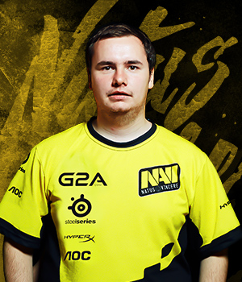

Возраст: 24Ладислав Ковач - один из ярчайших примеров универсального игрока. До выхода CS:GO словак на профессиональном уровне выступал и в CS 1.6, и в CS:Source. Начал играть в Counter-Strike более 10 лет назад благодаря брату, который купил в семью диск с мало кому известной на тот момент игрой.
Игра сразу настолько понравилась Ладиславу, что он днями и ночами тренировался и рос как игрок. Спустя недолгое время он уже нашел себе команду и принял участие в первых LANах. Из-за того, что турниров на его родине по CS 1.6 проводилось не так много, Ковач перешел на CS:S и два года защищал цвета Reason Gaming, за которую выиграл огромное количество турниров по Source. Несмотря на то что GuardiaN имел массу предложений от топовых европейских команд, он вернулся в CS 1.6, играл там за команды IQFINGERS, DEFEATERS, Corecell и SGC, параллельно выступал за национальную сборную. Стал обладателем множества наград, как командных, так и личных.
В CS:GO перешел в середине 2012 года, играл в составе команд myDGB, ePz, TCM-Gaming, 3DMAX, но по-настоящему засветился в составе Virtus.pro. В декабре 2013 пополнил ряды Natus Vincere.
В характере словака присутствует множество важных для игрока в Сounter-Strike черт: настойчивость, уверенность в себе и хладнокровие. Ковач один из тех игроков, которые всегда стараются до конца, до победного раунда. Таким людям всегда рады в такой команде, как Na'Vi.
SSD: HyperX Savage SSD 240 GB
Память: HyperX Savage DDR4 GB
Монитор: AOC g2460Pqu